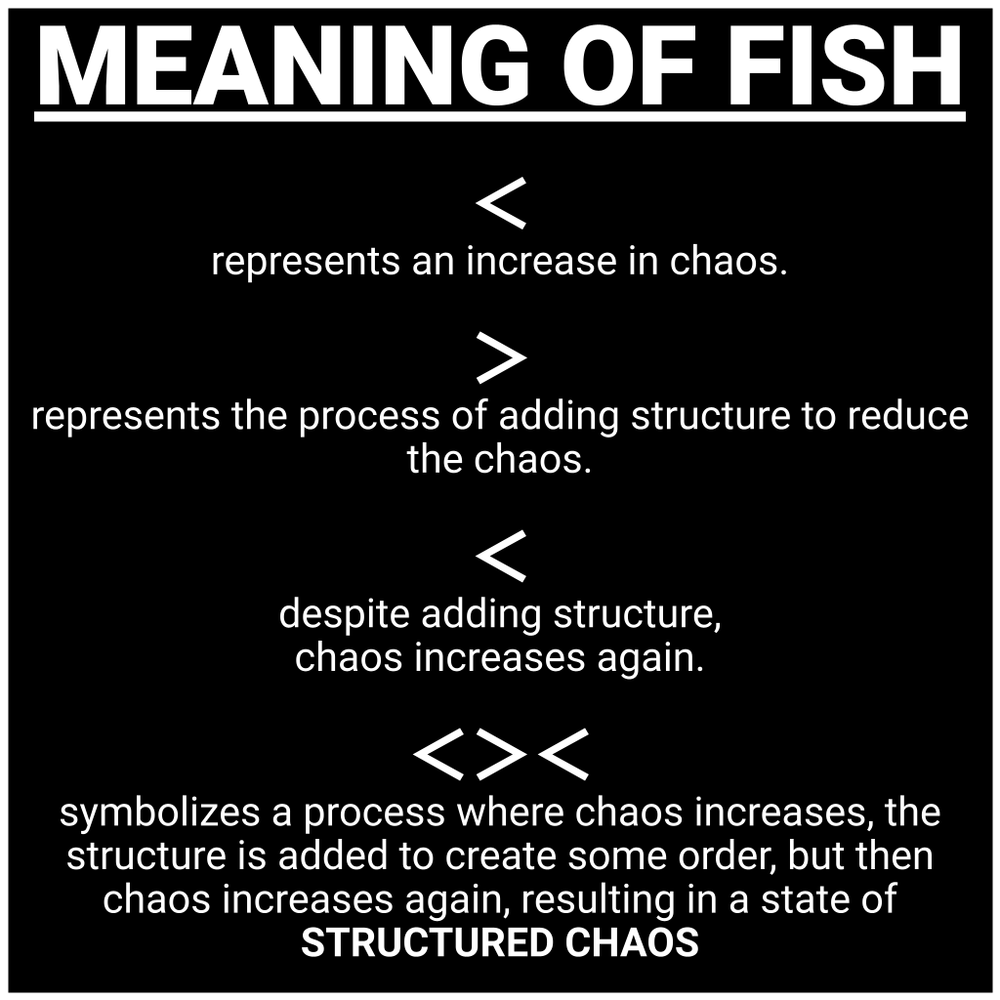

FISH <>< COMMUNITY
MEANING OF FISH <><
<: < represents chaos increase, > represents adding structure, <>< symbolizes structured chaos." class="meaning-image">FISH <>< COMMUNITY is made out of multiple communities, each with its own leadership and rules. All communities work together and follow the same principles.
This is the main <>< group, you can find all the fish verified groups at "FISH VERIFIED <><" FISHVE.7823 verification group
COMMUNITY PRINCIPLES
- FUN: Don't forget to have fun
- COMMON SENSE: Not everything needs a rule, sometimes the best guide is common sense.
- STRUCTURED CHAOS: Creativity often comes from chaos. Embrace it, but don't let it control you.
- CONFLICT AND CREATIVITY: It's okay to disagree. Conflict can lead to better ideas and innovations.
- COMMUNICATION: Resolving conflicts and problems requires respectful communication. It's important to address conflicts and problems as soon as possible and not let them escalate.
- INNOVATION: Always look for better ways to do things. Innovation is the key to progress.
- HUMILITY: Don't let your ego get in the way. Everyone has something to teach you.
- SIMPLICITY: The simplest solution is often the best one. Don't overcomplicate things.
- DECENCY: Don't be a degenerate. Treat others with respect and kindness.
- OPEN-MINDEDNESS: Be open to new ideas and experiences. They're the best way to learn and grow.
- AUTHENTICITY: Don't keep pretending to be someone you're not, it's a waste of energy
- SUCCESS AND CREATIVITY: Success and money are important, but they shouldn't limit your creativity. Use them as tools for growth, not as the final goal.
Human nature is complex. People are different, and not everyone will understand your principles or rules just because they are told to. Good and evil exist, and everyone comes from different cultures with different perspectives. Some people don't speak English or know how to communicate, and some people don't have the mental capacity or knowledge to understand complicated things. It's important to remember that things will never be perfect if humans are involved, so it's important to keep a balance between everything. <><
DAILY VRCHAT EVENT
Daily VRChat Calendar (UTC)
DAILY VRCHAT
Public event that lets people freely express themselves without many restrictions. People are given the freedom to be as chaotic, offensive, and loud as they wish to be.
The main objective of DAILY VRCHAT is to maintain a public <>< group instance for 2 hours, inviting anyone from the internet to join (https://vrc.group/FISH.9566).
After the event, everyone will be kicked from the instance
THERE ARE 2 RULES!
- 1) NSFW avatars are not allowed.
- 2) Crasher avatars are not allowed.
If you break these rules you will be kicked or banned from joining DAILY VRCHAT
Check the Discord Events channel for more details. A link to the world instance will be posted to #🔥instance-link at the start of the event. (Discord accessible via theziver.com)
WARNING!
This daily event is not your safe space. Moderators won't assist you with any hateful, racist, or homophobic behavior. And will only enforce 2 rules, If you get easily emotionally distressed DO NOT GO TO THIS EVENT
VRChat's Terms of Service and Guidelines still apply, and violations could result in your account being banned.
FISH VERIFIED COMMUNITIES <><

The FISH VERIFIED verifies communities for the FISH <>< COMMUNITY. If a community is fish verified the owner of the verified community will be inside this vrchat group (FISHVE.7823) and will also have the FISH-VERIFIED role on the <>< discord server.
Criteria for Verification
To get your community verified as a <>< community, you need to meet the following criteria:
- Your community should contribute significantly to the <>< community.
- The community must be managed by a capable person.
- The community must be safe for work (SFW)
- The community should have a clear idea behind it and be active.
If you believe your community could be fish verified, contact TheZiver on <>< discord server at theziver.com
Benefits of Verification
When a community gets verified, they receive:
- Full support from the <>< community
- Dedicated text channel on the <>< discord server
- Asset for displaying group member count in your vrchat world
- Daily vrchat starter pack access, chance to build your own daily vrchat world
- Owner of fish-verified community receives NOCLIP in all DAILY VRCHAT worlds
LIST OF FISH VERIFIED COMMUNITIES
- CHEESE FISH avatar/world update group, makes bunch of meme avatars, Owner is cunks feet
VRChat Group: https://vrc.group/CHEESE.1570 - VAPOR FISH nostalgia time capsule, makes nostalgia. Owner is Robaws
VRChat Group: https://vrc.group/VAPOR.3451 - GAMBLE FISH casino game world inside vrchat. Owner is spidget
VRChat Group: https://vrc.group/GAMBLE.0958
Discord Server: https://discord.gg/EZmPDtFAPx - RAT FISH is a avatar/world update group, Owner is luiswillich
VRChat Group: https://vrc.group/RAT.3149 - The Rusk Shack is a community for people who use rusk avatars, Owner is verse
VRChat Group: https://vrc.group/TRUSKS.6089
Discord Server: https://discord.gg/theruskshack - AVIFAIR is a Global gaming convention inside VR. Owner is artholic
VRChat Group: https://vrc.group/AVI.9657
Discord Server: https://discord.gg/P5REVfSVMG - Family Friendly Cult is for people who use ukon avatars. Owner is comedian_t
VRChat Group: https://vrc.group/FAMILY.3738
Discord Server: https://discord.gg/BFex5YNKuy - Portal Media is a VR film studio. Owner is Virtual
VRChat Group: https://vrc.group/PORTAL.0170
Discord Server: https://discord.gg/Z6Xrey7rJw
LUXURY TRASH STORE
LUXURY TRASH makes and sells luxury items to the FISH <>< COMMUNITY.
Come visit the store at LUXURY TRASH world or go to theziver.booth.pm
Store owner: TheZiver
"Success and money are important, but they shouldn't limit your creativity. Use them as tools for growth, not as the final goal."
This store sells 3d models like fish, eggs and avatar assets like:
- The LUXURY CUBE is a knee accessory made out of 192 polygons, 4 bones, 19 blendshapes, gold matcap, fish scale normal map. It also has the 69 vertex in the middle that has no purpose :D
- The FISHING FLAG is a VRChat avatar tool designed for cheating game worlds and exploring inaccessible areas.
- The LUXURY PIPE has 816 polygons, 8 bones, 2 shape keys, gold matcap, fish scale normal map and sound effects
- LUXURY EGG
- LUXURY PRE-CRACKED EGG
- LUXURY STAR
- LUXURY FISH [Free Item]
- FISH HAIRCLIP [Free Item]
- LUXURY TURRET (WORLD PREFAB)
ROSE FISH COMMUNITY
Content creation community that makes content for the FISH <>< COMMUNITY. When someone joins rose fish, they get access to exclusive things.
DATABASE: rosefish.theziver.com
Joining ROSE FISH
To join rose fish you need to make a contribution that requires human effort to create and could be easily used by the fish community members. For example:
- Public VRChat avatar/world
- 3D model
- Script, Code, Utility, Addon, Tool
- Shaders
- Videos/Animations
- Music, Sound Effects (only youtube or google drive links allowed)
- Drawings
- Other content related to <>< that requires effort to create.
If you believe you have made a significant contribution, you can submit it on <>< discord server at theziver.com
After submitting a contribution, all the rose fish members will participate in a voting process on discord. To receive a rose fish invitation, the contribution must receive a "YES" vote from over 60％ of the rose fish members.
We have an avatar world called: "ROSE <>< AVATARS" where we distribute our public avatars.
Please make your contributions presentable and concise and free from any NSFW content. <><
ROSE FISH AVATAR GUIDELINES
- AVATAR CONTEXT: Avatar context matters, avatars designed with the intention of being sexual, offensive, or malicious are not allowed.
- CLOTHING: Avatars can wear skimpy clothing, but it must be used in a non-sexual manner.
- GORE: Avatars that show realistic violence or gore are not allowed.
- PARODY COMEDY: Avatars that are loud, disruptive, or malicious are allowed if they're created for comedic purposes. This includes avatars with bright colors, flashing images, and performance-heavy shaders.
- COPYRIGHT RESPONSIBILITY: By submitting an avatar, users accept the risk of a DMCA strike if they violate intellectual property rights.